Diagnóstico gratis
Sesión estratégica sin costo: objetivo, presupuesto, zonas con sentido en Puerto Varas, Frutillar, Llanquihue y Malalcahuello, y en qué fijarte antes de visitar.
Oferta hasta el 30 de septiembre de 2026
Diagnóstico estratégico
¿Buscas terreno en el sur y no sabes por dónde empezar? Primero ordenamos tu objetivo, zonas y criterios — sin costo y sin obligación de contratar más. Si después quieres que busquemos contigo, la búsqueda personalizada tiene 30% de descuento hasta el 30 de septiembre.
Búsqueda personalizada 3,5 UF (antes 5 UF · 30% dto.)
Cotización después del diagnóstico — sin compromiso extra.
Si más adelante compras con nuestra asesoría (2,5%), las 3,5 UF pagadas por la búsqueda se descuentan de ese honorario.
Desde Santiago, el norte o el sur de Chile · Reunión online o presencial en Puerto Varas
Más de 100.000 UF invertidas a través de nuestra consultoría
Nuestros clientes nos avalan
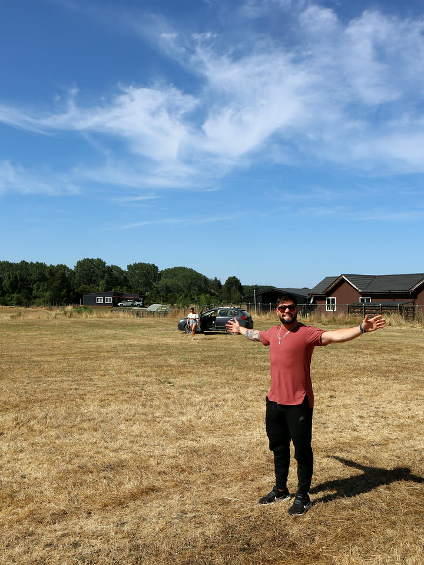
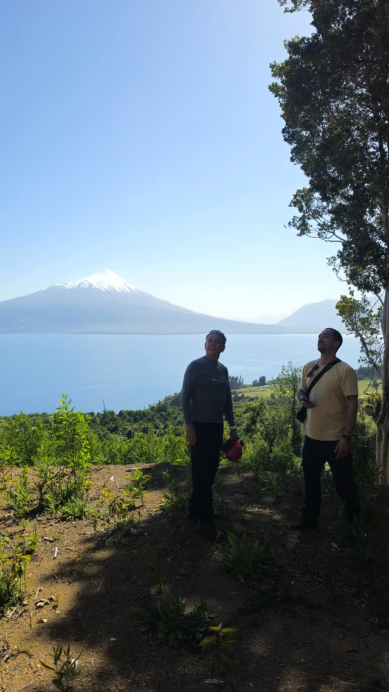
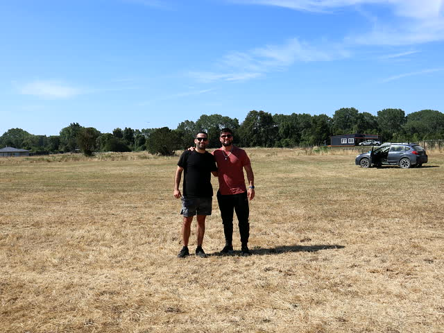
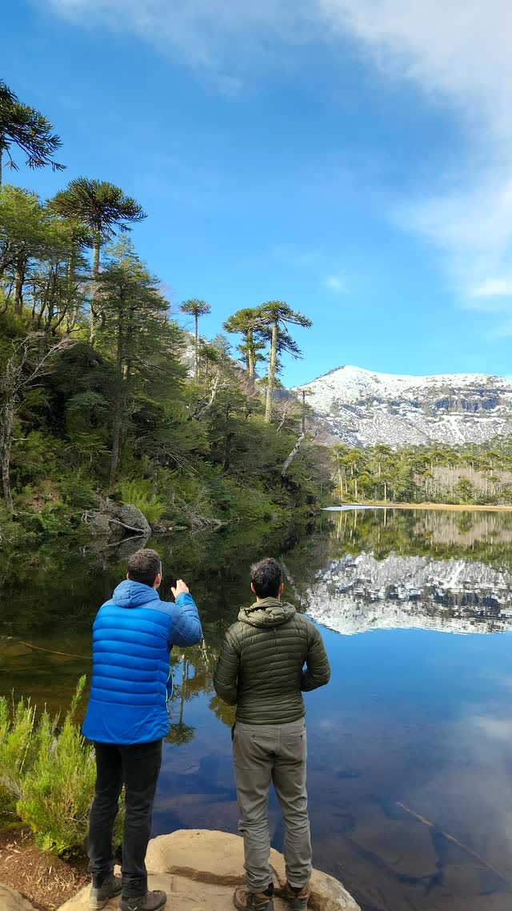
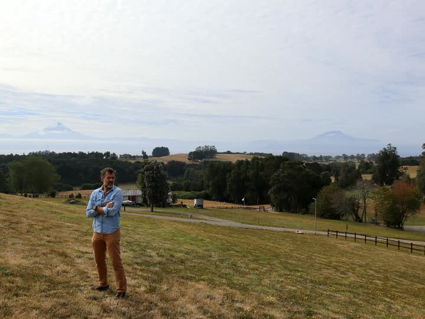
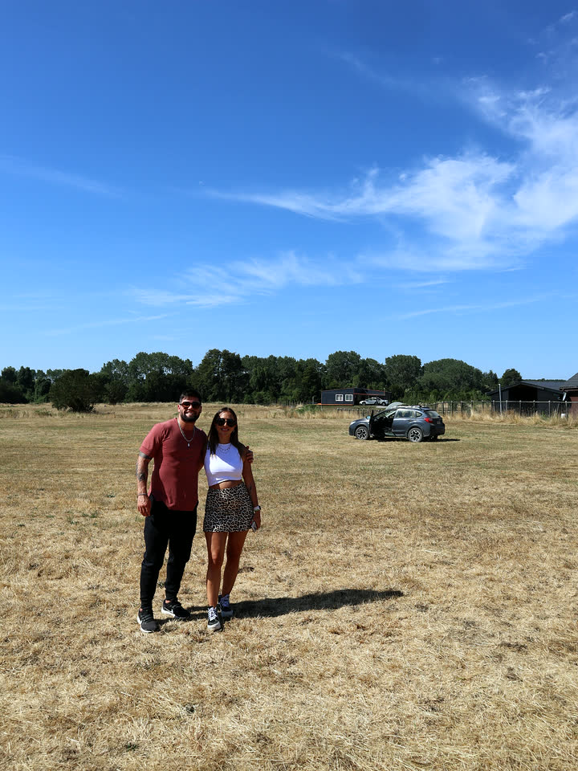
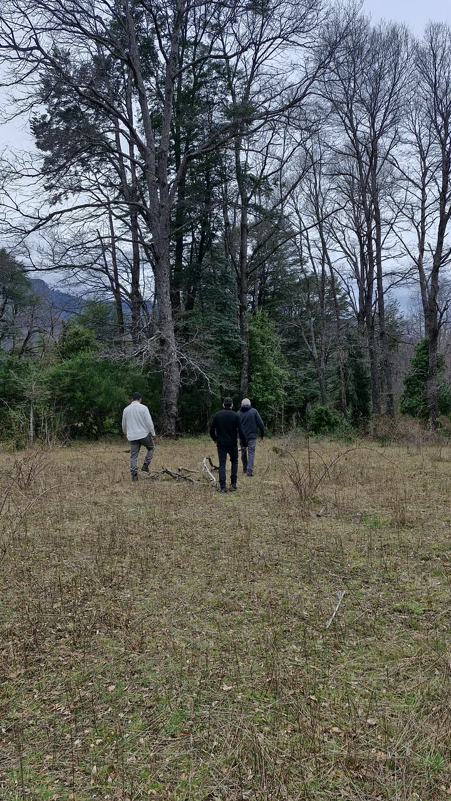
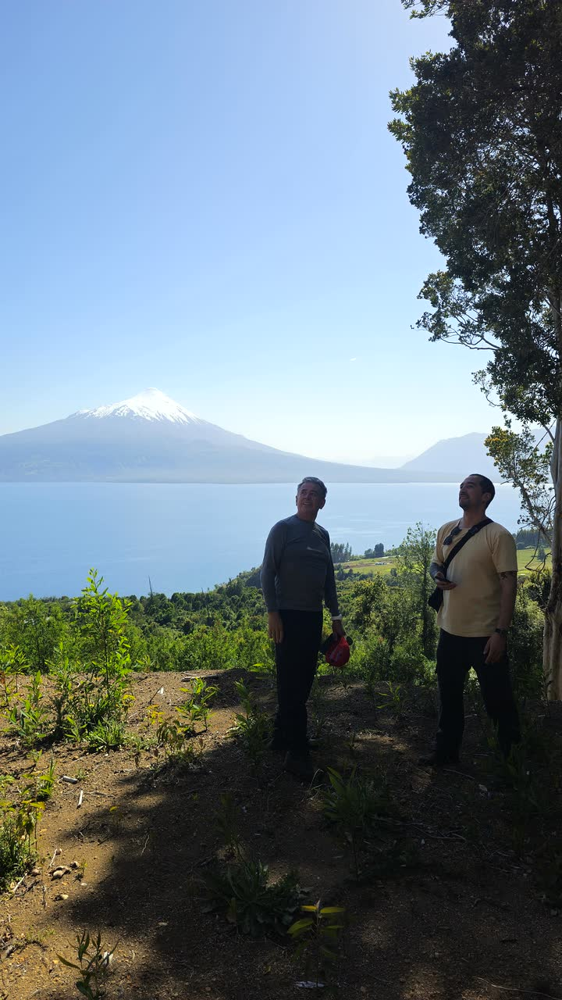
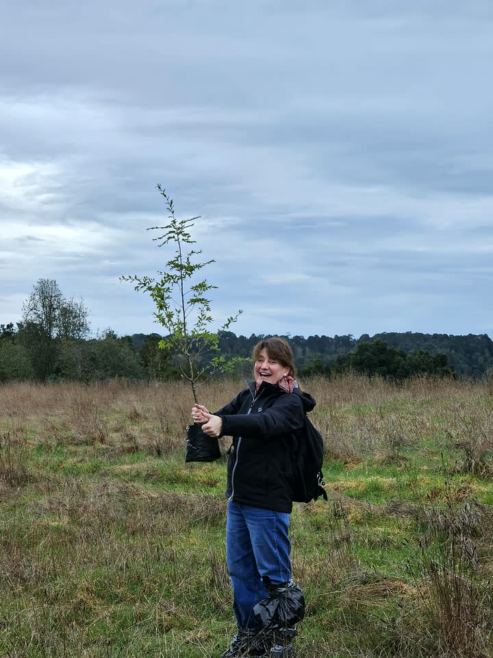
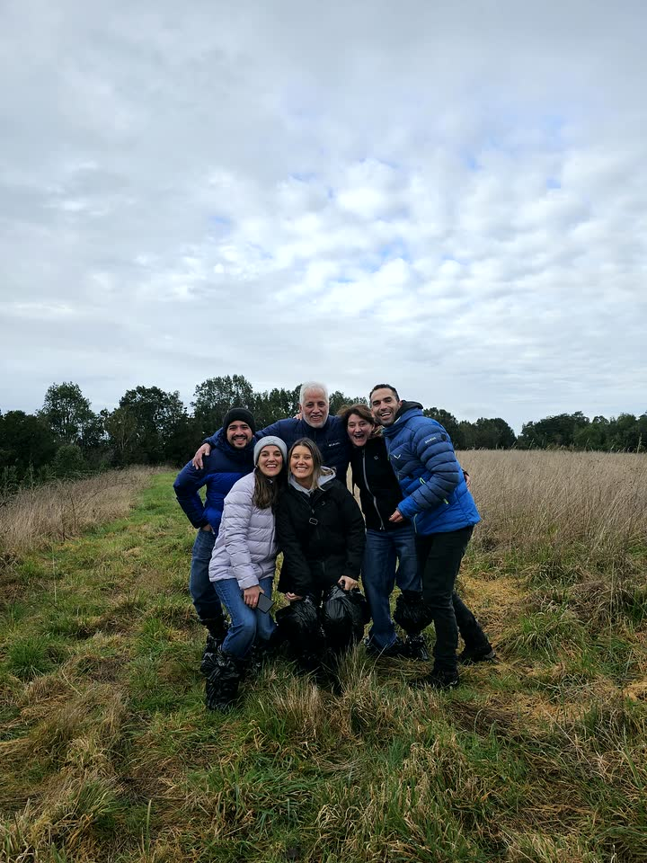
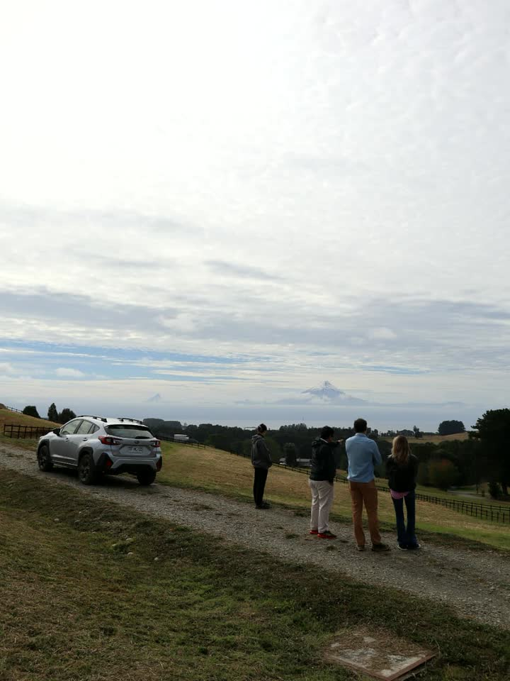
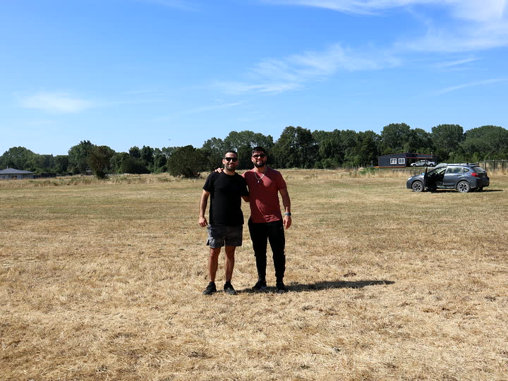
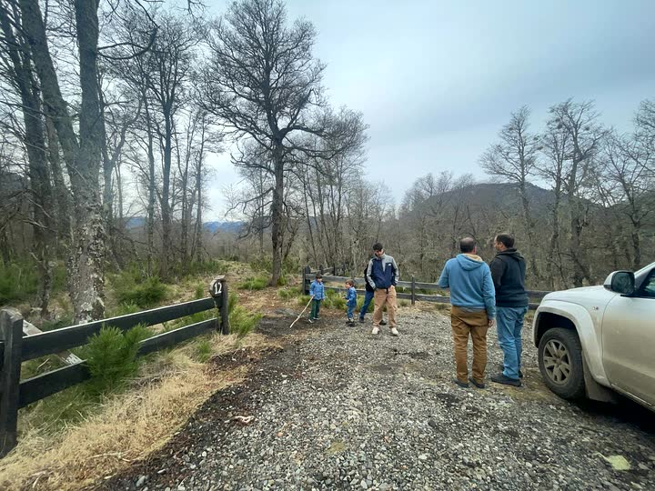
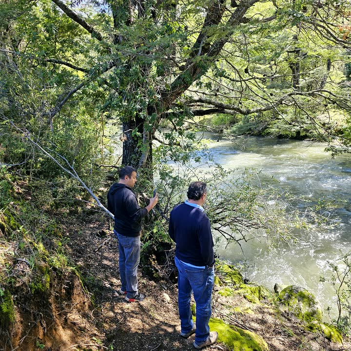
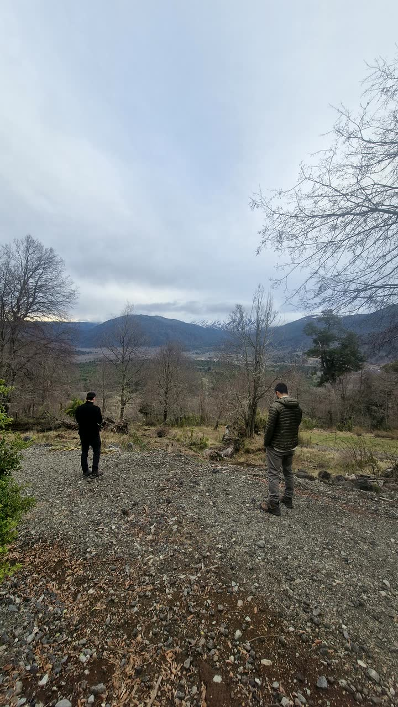
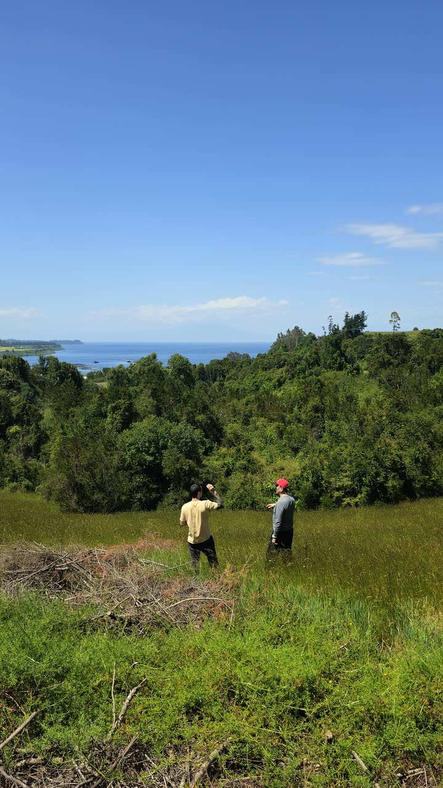
La diferencia que importa
En una corredora, el mandato suele venir del propietario que vende. En Land Advisors, el consultor trabaja solo para ti: el comprador. Misma palabra “asesorar”, incentivos distintos.
Enamorarse del terreno está bien. Nosotros aportamos criterio territorial y mercado local para que esa decisión cierre con sentido — velando por tus intereses como comprador.
Siguiente paso
Completa el formulario. Luego puedes seguir por WhatsApp o agendar tu diagnóstico (gratis hasta el 30 de septiembre de 2026).
Qué incluye
No somos corredora: no vendemos terrenos. Te acompañamos a comprar el correcto.

Sesión estratégica sin costo: objetivo, presupuesto, zonas con sentido en Puerto Varas, Frutillar, Llanquihue y Malalcahuello, y en qué fijarte antes de visitar.
Si quieres avanzar, te cotizamos la búsqueda personalizada a 3,5 UF (30% dto.). Si no, te quedas con el mapa y los criterios — sin compromiso extra.
Filtramos territorio, normativa, servicios y precio — no solo lo más visible en portales.
Elegimos juntos las 3 mejores alternativas. Si compras con nuestra asesoría, las 3,5 UF se descuentan de la comisión.
Acompañamiento
El diagnóstico ordena zona y criterios antes de otro viaje al sur. La búsqueda es opcional: te acompañamos con criterio local, sin presión.
Ver guía para comprar terreno →No. El diagnóstico estratégico es gratuito en esta promoción, sin obligación de contratar la búsqueda ni ningún otro servicio.
Reunión estratégica (online o presencial), zonas recomendadas según tu objetivo y criterios para evaluar terrenos antes de ofertar. Valor habitual: 1 UF.
Solo si después del diagnóstico decides que quieres que busquemos contigo. Te entregamos cotización clara; no hay compromiso automático.
Sí. Si contratas nuestra asesoría de adquisición (2,5% del valor), las 3,5 UF pagadas por la búsqueda personalizada se descuentan de ese honorario.
Diagnóstico gratis y búsqueda a 3,5 UF válidos para agendas confirmadas hasta el 30 de septiembre de 2026, sujeto a disponibilidad.
Sí. Muchos clientes viven en Santiago o en el norte de Chile y compran en la cuenca del Lago Llanquihue y Malalcahuello. La reunión inicial puede ser online.
No. Land Advisors es consultoría territorial: no vendemos terrenos propios; te ayudamos a comprar el correcto con lectura de territorio y mercado local.
Diagnóstico gratis sin obligación de contratar otros servicios. Búsqueda a 3,5 UF sujeta a cotización y confirmación. Precios en UF. No somos corredora ni portal inmobiliario.